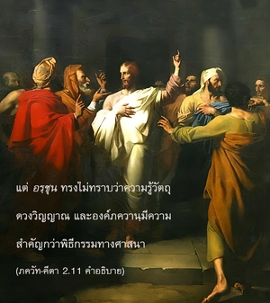

บุคลิกภาพสูงสุดแห่งพระเจ้าตรัสว่า ขณะที่พูดด้วยวาจาอันสูงส่งแต่เธอกลับมาเศร้าโศกกับสิ่งที่ไม่ควรค่าแก่การโศกเศร้า ผู้ที่มีปัญญาจะไม่เศร้าโศกไปกับผู้ที่ยังมีชีวิตอยู่ หรือผู้ที่ล่วงลับไปแล้ว



ทันทีที่องค์ภควานฺทรงรับตำแหน่งเป็นพระอาจารย์ก็ทรงสั่งสอนศิษย์ด้วยการเรียกโดยอ้อมว่า เจ้าคนโง่ องค์กฺฤษฺณทรงตรัสว่า “เธอพูดเหมือนกับนักปราชญ์ แต่ไม่รู้ว่าผู้ที่เป็นนักปราชญ์ หรือผู้ที่รู้ข้อแตกต่างระหว่างร่างกายกับดวงวิญญาณจะไม่เศร้าโศก ไม่ว่าร่างกายจะอยู่ในสภาวะที่มีชีวิตอยู่ หรือตายไปแล้ว” ดังที่จะอธิบายในบทต่อๆ ไปให้ทราบชัดเจนว่าความรู้หมายถึง รู้วัตถุและดวงวิญญาณ และรู้ถึงผู้ควบคุมทั้งสองสิ่งนี้ อรฺชุน ทรงโต้เถียงว่าเราควรจะให้ความสำคัญแก่หลักศาสนามากกว่าการเมือง หรือการสังคม แต่ อรฺชุน ทรงไม่ทราบว่าความรู้วัตถุ ดวงวิญญาณ และองค์ภควานฺมีความสำคัญมากกว่าพิธีกรรมทางศาสนา หากไม่มีความรู้เช่นนี้ก็ไม่ควรอวดอ้างตนเองว่าเป็นผู้มีความรู้สูง เพราะไม่รู้จึงต้องมาเศร้าโศกกับสิ่งที่ไม่ควรค่าแก่ความเศร้าโศก ร่างกายที่เกิดมาแล้วจะต้องมาถึงจุดจบ ไม่วันนี้ก็พรุ่งนี้ ฉะนั้น ร่างกายจึงไม่สำคัญเท่าดวงวิญญาณ ผู้ที่ทราบเช่นนี้จึงจะเป็นผู้รู้ที่แท้จริง และบุคคลผู้นี้จะไม่มีความเศร้าโศกเสียใจอันเนื่องมาจากร่างกายวัตถุ